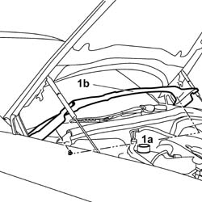
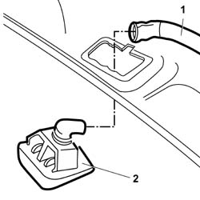
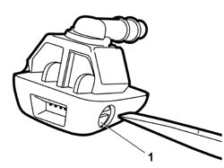

5050B10 front windscreen washer jets - r+r clean and/or position
- Path
- Procedures > 50 auxiliary units > 5050 screen washers and headlamp wash/wipe > 5050B WINDSCREEN WASH/WIPE > 5050B10 front windscreen washer jets - r+r clean and/or position
- Kind
- repair procedure (removal / refitting; the operation number is the code)
- Applies to
- all engines; all production periods
- Interactive page
- https://sloeber94.github.io/elrnDB-lThss/en/#/79277
Applies to: all engines; all production periods
 Removing
Removing
 Refitting
Refitting- Open the bonnet.
See in Op. 7040D50 ENGINE COMPARTMENT UPPER SOUND INSULATION SHIELD - R.R.
1. Undo the pins (1a) fastening the windscreen washer jets cover (1b).
- Remove the trim.

Applies to: all engines; all production periods
1. Disconnect the screen washer fluid supply pipes to the jets, jet side.
2. Remove the windscreen washer jets from the trim.

Applies to: all engines; all production periods
Refitting
Removing- Clean the front windscreen washer jets and check that they are not damaged.
- Secure the jets to the trim.
1. Adjust the direction of the front windscreen washer jets using a screwdriver on the adjustment screw.

Applies to: all engines; all production periods
- Connect the screen washer fluid supply pipes to the jets.
- Secure the jet trim to the bonnet using the fastening pins.
See in Op. 7040D50 ENGINE COMPARTMENT UPPER SOUND INSULATION SHIELD - R.R.